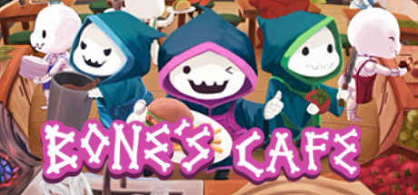

Bone's Cafe
Bone's Café is a fast paced cooking game. 1-4 Players couch co-op. Customize the layout of your kitchen to guarantee your success. Specialize your menu in ingredients and recipes to design your ultimate restaurant. Put your necromancy skills to the test and raise your own undead kitchen staff.
Tools: Unity, C#, Photoshop